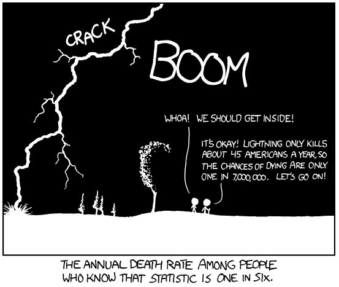

Developing a reduced-form specification¶
This section describes some of the considerations that go into developing a reduced-form specification using weather panel data. Our discussion here will be very practical and limited to nonlinear panel regressions.
See also
See also Estimating the Economic Impacts of Climate Change Using Weather Observations for a review of the available econometric techniques and their strengths and weaknesses. For an extensive review of the results available from the climate econometric literature and the empirical methods used to identify them, a good resource is Social and Economic Impacts of Climate.
The key decision points in this section will be as follows:
Decide what weather variables (e.g. temperature, precipitation, etc.) to use in the analysis, and in what form (e.g. average, maximum, or minimum for temperature variable).
Settle on the temporal scale (e.g. days, months, years, etc.) for the analysis. It is generally decided based on how frequently we expect the responses on our dependent variable to change and the temporal scale of other datasets we intend to use.
Choose what scheme to use for the spatial aggregation. We can choose either aggregation-before-transformation or transformation-before-aggregation depending on what scale the process we are interested in, is actually occurring.
Decide on what functional forms to use in the analysis. It is always good to experiment with multiple functional forms and then decide on the main specification depending on which of them provides the best linear approximation of the true process.
Use cross-validation to converge on the most-preferred specification. It is always a good strategy to show results for other specification for attesting the robustness of results.
Choosing weather variables and their forms¶
The choice of weather variables depends on the question we are trying to answer, and there are many forms to represent any given variable. For example, in the case of temperature, we can use \(T_{avg}\), \(T_{min}\), \(T_{max}\), days above 30 C, heating and cooling degree-days, or growing degree-days. Morevoer, it is very important to first think about possible mechanism(s) behind a change witnessed in the environment, and then only make choices for variables that can explain that mechanism. A few of the important and frequently-used weather variables are listed below, and why we might choose them:
Temperature: Temperature relationships are often preferred in climate impacts research, because temperature is more predictable than many other weather variables. There are various measures of temperature that can be used. Some of them are listed below:
\(T_{min}\), \(T_{max}\): Many socioeconomic processes are more sensitive to extreme temperatures than to variation in the average. This is also useful when temperature variation is large, leading to significant differences in the cold end and hot end responses. These are important metrics when heterogeneity within time units matters, and may better capture heat waves and cold spells. Also, note that \(T_{min}\) better reflects nighttime temperatures while \(T_{max}\) better reflects daytime temperatures. Not all datasets include \(T_{min}\) or \(T_{max}\).
\(T_{avg}\): A good mean metric for seeing average response over the temperature support, when there is not much variation in temperature within each time unit considered in the study. \(T_{avg}\) is most appropriate when there is some natural inertia in the response, so that the dependent variable is responding to a kind of average over the last 24 hours. Note that \(T_{avg}\) is often just equal to \((T_{min} + T_{max}) / 2\), unless calculated from sub-daily data.
HDD/CDD & GDD: Degree days (DD) are a measure of ’how much’ and for ’how long’ the outside air temperature was above or below a certain level. A sinusoid between \(T_{min}\) and \(T_{max}\) can be used to approximate DDs from daily data.
Heat Index & Wet Bulb Temperature: (see below on humidity)
Humidity: There are mainly three metrics for humidity measurements: absolute, relative (often “RH”), and specific. Absolute humidity describes the water content of air, expressed in grams per cubic metre or grams per kilogram. Relative humidity is expressed as a percentage relative to a maximum humidity value for a given temperature. Specific humidity is the ratio of water vapor mass to total moist air parcel mass. Human (and animal) bodies rely on evaporative cooling to regulate temperature in hot weather, the effectiveness of which depends on how much more moisture the atmosphere can currently hold (1 - RH). As a result, various temperature-humidity metrics have been developed to estimate “apparent” temperature, i.e. the temperature the current weather “feels like”:
Wet-Bulb Temperature (WBT): the temperature read by a thermometer covered in water-soaked cloth (wet-bulb thermometer) over which air is passed. Gives the lowest temperature that can be reached under current conditions by evaporative cooling only. Equals air temperature at 100% relative humidity, and is lower at lower humidity.
Wet-Bulb Globe Temperature (WBGT): a weighted index that combines WBT with measures of the impact of direct radiative transfer (e.g. sunlight)
Heat Index (HI): various calculated metrics combining shade temperature and relative humidity
Precipitation: highly local (in space and time), non-normally distributed i.e. often takes extremely low or high values (especially compared to temperature), poorly measured, and poorly predicted (see Section 1.5. Precipitation is often used as a control since it is correlated with temperature. However, the strength and direction of this correlation varies significantly by region and time of year (see e.g. Trenberth et al. 2005, with implications for collinearity). Furthermore, the same care should be taken when inserting precipitation into a model as any other weather or social variable - what is its expected role? In what form should the data be? etc. Precipitation affects society differently at different spatiotemporal scales - annual precipitation may be useful for studying snowpack trends, drinking water supply, or the effect of droughts on agriculture; maximum precipitation rates may be the relevant metric for flood damages or crop failures. Remember that though means and extremes may be correlated, it’s still possible to have a record storm in an unnaturally dry year, or an unnaturally wet year without heavy precipitation. As a result, different metrics of precipitation are often used (incomplete list):
Total precipitation (e.g., over a year): May be useful for large-scale impacts such as snowpack trends. Often used as a control in responses to extreme weather, despite being unsuited to studying short-term phenomena.
Soil water, potential evapotranspiration rate (PET), Palmer drought severity index (PDSI), and water runoff/availability: often used to capture water stress.
Number of of rainy/dry days, or moments of the precipitation distribution: the distribution of precipitation often matters more than total. Some datasets (such as HadEX2) specialize in extremes data.
River discharge rate: River flows are generally measured at the station-level. While runoff is avaialble in gridded products, it is not a good reflection of water availability. Hydrological models (like VIC) can translate precipitation into river discharges across a region.
Wind speed: The process of interest determines how wind speeds should be measured. For example, normal speeds are important for agriculture, squared speeds for distructive force, and cubic speeds for wind turbine power. Also consider gust velocity, which is generally available. Maximum wind speed over some time period has been used as well.
Net primary productivity (NPP): It is the difference of amount of carbon dioxide that vegetation takes in during photosynthesis and the amount of carbon dioxide released during respiration. The data come from MODIS on NASA’s Terra satellite. Values range from near 0 g of carbon/area/day (tan) to 6.5 g of carbon/area/day (dark green). A negative value means decomposition or respiration overpowered carbon absorption; more carbon was released to the atmosphere than the plants took in.
Evapotranspiration rate (ET): It is the sum of evaporation and plant transpiration from the Earth’s land and ocean surface to the atmosphere. Changes in ET are estimated using water stress measures in plants, and are related to the agricultural productivity.
Solar radiation: Shortwave radiation (visible light) contains a lot of energy; longwave radiation (infrared light) contains less energy than shortwave radiation. The sun emits shortwave radiation because it is extremely hot, while the Earth re-emits heat it receives as longwave radiation in the form of infrared rays. Exposure of shortwave radiation is said to cause skin cancer, eye damage, etc. However, UV (shortwave) radiation is important for regulating vitamin D circulation in our body.
Sea surface temperature (SST) and ocean temperature: SST is the water temperature close to the ocean’s surface, while ocean temperature is related to ocean heat content, an important topic in the study of global warming. Weather satellites have been available to determine SST information since 1967. NASA and Moderate Resolution Imaging Spectroradiometer (MODIS) SST satellites have been providing global SST data since 2000, available with a day lag. Though SST has a large impact on global weather patterns, other metrics (such as El Niño indices - ENSO3.4, etc. - or various other oscillation indices) may be more useful in understanding its impact.
Climatic indicies: A wide range of metrics have been developed to understand the state of the ocean-atmosphere system at large scales. These are measured in a standardized way (e.g., by comparing temperature at two points or by extracting a mean over a region), and often have long time-series, often at the monthly level. However, they do not vary over space. Data for some of the most important are available through NOAA. Some of the most important are:
El Niño/Southern Oscillation (ENSO): Affects temperature and precipitation across the globe, with hotspots on most continents. For some applications, the value of the signal will be less important than the identification of El Niño and La Niña phases. These phases can be somewhat predicted months in advance. El Niño events can be subclassified as Modoki or not.
Indian Ocean Dipole (IOD): IOD has affects weather throughout East Africa, South and Southeast Asia, and Oceania.
Spatial and temporal scales of economic processes¶
The process of developing a reduced-form specification starts with a study of the “true model”, or data-generating process, that relates our dependent variable to our weather variables. A crucial aspect of that relationship is the question of scale.
Weather data products are generally available in gridded form, developed through careful interpolation and/or reanalysis. The grids used can vary in size across datasets, but they can be aggregated to administrative units like county, city, etc., using appropriate weighted aggregation methods. Think about the scale of administrative units, relative to the scale of the grid cells. If the regions are much bigger than the grid cells, a weighted average across included cells is appropriate. If the regions are much smaller than the cells, it will probably be necessary to aggregate the regions, since the level of variation is only at the grid cell level. If the two are of similar sizes, it may be necessary to account for the amount of each grid cell lies within each region. This can be calculated as a transformation matrix, with a row for each region and a column for each cell. Once the matrix is calculated, it can be reused for each time step. More details for this process are described in sections 3 and 5.
Typically, relating weather to a dependent variable requires some kind of non-linear transformation. For example, estimating a polynomial functional form requires raising the temperatures to various powers. Importantly, the square of a weighted average of grid-level temperatures is not the same as the weighted average of the square of grid-level temperatures.
While doing the spatial aggregation, we need to decide whether we want to transform the data first and then aggregate it (transformation-before-aggregation) or aggregate it and then transform it (aggregation-before-transformation). This decision is based on whether the phenomenon in consideration is occurring at the local (grid or individual) scale or at the larger administrative units (country, state, county, etc.) scale. Also, it matters what variable is under consideration. For example, doing aggregation-before-transformation for temperature will distort the signal less that doing it for precipitation. This is because precipitation is highly local both temporally and spatially; it could rain for <1 min in <1 km radius area.
Transformation-before-aggregation¶
When an economic process is occurring at the local level (for example, for individuals or households), we need to first do our estimation at the grid level. For example, to estimate the effect of temperature on human mortality at the county level, we should reckon that the effect of temperature on mortality is a local phenomenon, so the estimation should happen at the lowest possible level. Since the dependent variable is a sum of individual-level outcomes, we should write down the reduced-form specification for an individual experiencing high-resolution weather, and then sum across all of those reduced forms. The result is that we need to do any non-linear transformation of our weather variables at the grid level, then aggregate these values using a weighted averaging method, and feed these into our estimation procedure.
Mathematical formulation for transformation-before-aggregation method
We want to understand how local agents respond to weather shocks. Suppose that there exists an agent-level dose-response curve, \(y_{js} = f(T_{ps})\), for a socioeconomic outcome for agent \(j\), where the temperature affecting agents is in grid cell \(p\) and occurs in timestep \(s\) (e.g., if the agents respond on a day-by-day basis, \(T_{ps}\) is the local weather for a single day).
However, we do not observe agent-level responses. Instead, we have region-wide sums, \(y_{it}\) for region \(i\) and reporting period \(t\). For example, if \(y_{js}\) is death risk for agent \(j\) for a given day, we may only observe total deaths across a region in each year, $\(y_{it} = \sum_{s \in t} \sum_{j \in i} y_{js}.\)$
We can determine the agent-level response \(f(T_{ps})\) if we assume
linearity. First, let us represent this as if we could run a regression with agent-level data, breaking up the dose-response
curve into a sum of terms:
$\(f(T_{ps}) = \beta_1 g_1(T_{ps}) + \beta_2 g_2(T_{ps}) + \cdots + \beta_k g_k(T_{ps})\)$
where \(g_k(T_{ps})\) is a transformation of the weather variables. For example, for a cubic response curve, \(g_1(T_{ps}) = T_{ps}\), \(g_2(T_{ps}) = T_{ps}^2\), and \(g_3(T_{ps}) = T_{ps}^3\).
We know that
$\(y_{it} = \sum_{s\in t} \sum_{j\in i} y_{js} = \sum_{s\in t} \sum_{p\in i}\)\(
\)\(\beta_1 g_1(T_{ps}) + \beta_2 g_2(T_{ps}) + \cdots + \beta_k g_k(T_{ps})\)$
We can rearrange this to
$\(y_{it} = \beta_1 (\sum_{s\in t} \sum_{p\in i} g_1(T_{ps})) + \)\(
\)\(\beta_2 (\sum_{s\in t} \sum_{p\in i} g_2(T_{ps})) + \cdots + \)\(
\)\(\beta_k (\sum_{s\in t} \sum_{p\in i} g_k(T_{ps}))\)$
That is, the variables used in the regression should be the sum over weather data that has been transformed at the grid level.
Aggregation-before-transformation¶
When an economic process is occurring at the regional level, we need to first aggregate weather variable to that level before transforming it. For example, to estimate the effect of storm events on public service employment at the administrative office level, we need to take into account the fact that hiring/firing of public service employees happens at the office level only. Estimating grid-level effects will lead to wrong estimation, as it should result in zero estimate for those (almost all) grid cells which do not contain administrative offices, and extremely large values for those (very few) cells, which do.
Using the formulation above, here we would regress: $\(y_{it} = \beta_1 g_1(\sum_{s\in t} \sum_{p\in i} T_{ps}) + \)\( \)\(\beta_2 g_2(\sum_{s\in t} \sum_{p\in i} T_{ps}) + \cdots + \)\( \)\(\beta_k g_k(\sum_{s\in t} \sum_{p\in i} T_{ps})\)$
Where \(T_{ps}\) is the gridded weather for cell \(p\) in time step \(s\), \(g_k(\cdot)\) is the non-linear transformation (e.g., raising to powers for polynomials), and \(y_{it}\) is the dependent variable observed for region \(i\) in reporting period \(t\). Weather data products can have temporal resolution finer than scale of daily observations. Like spatial aggregation, we can do temporal aggregation to month, year, or decade.
